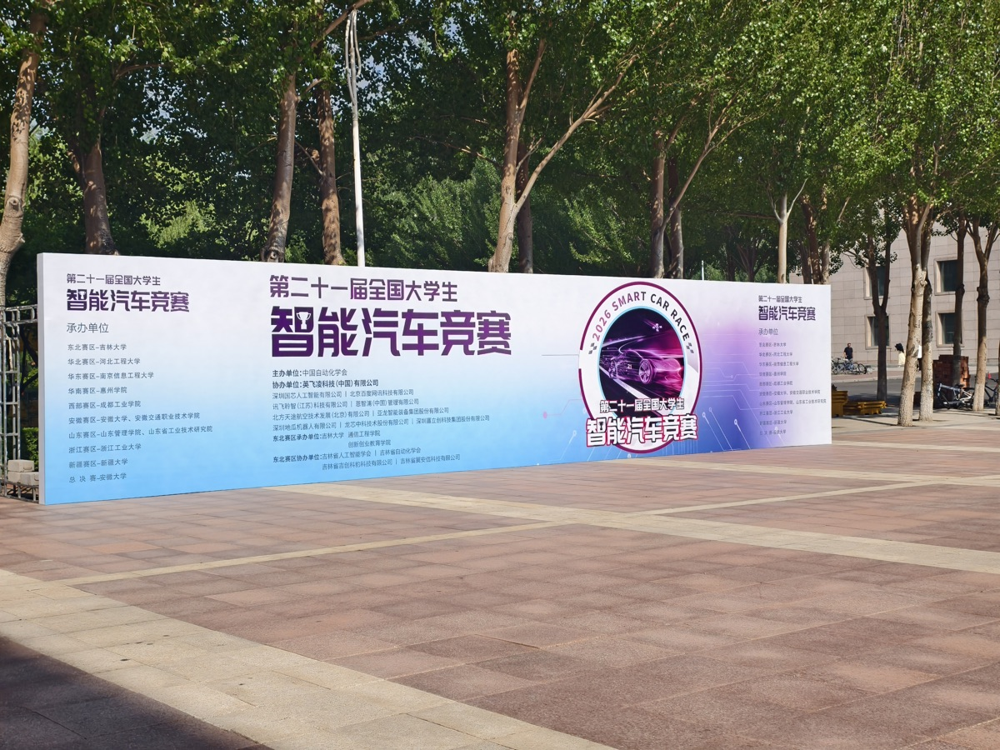
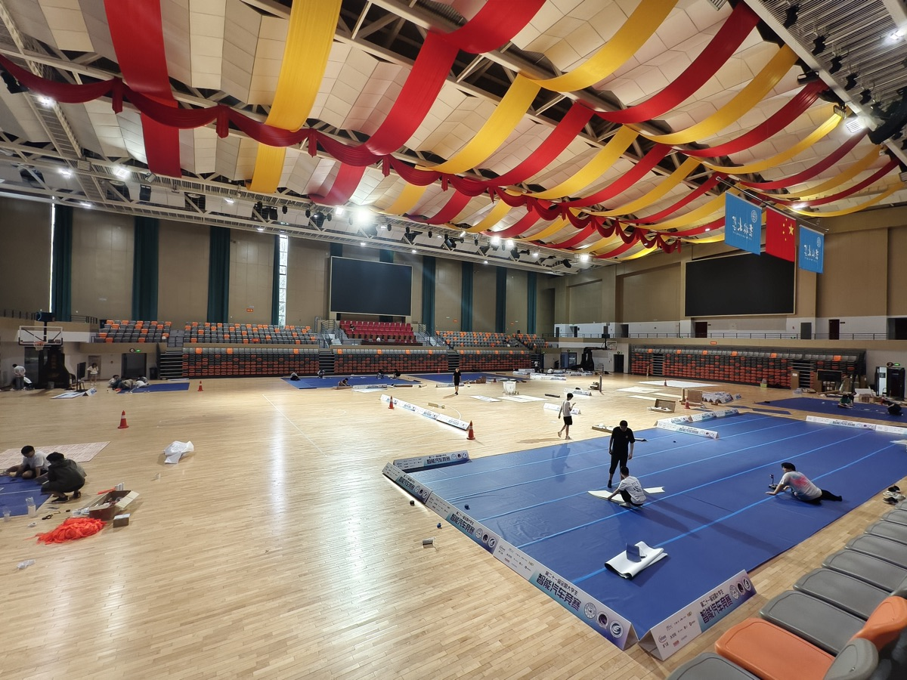
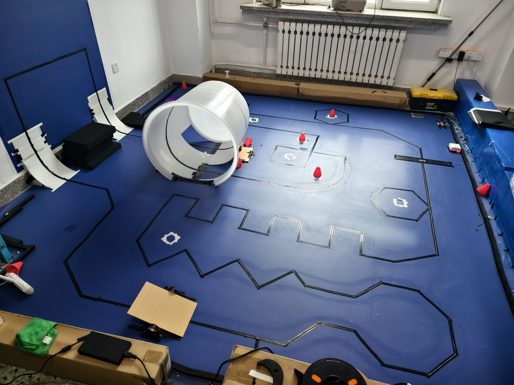

2026 · 21ST第 21 届全国大学生智能汽车竞赛
8 支参赛队伍全部获奖；1 队同时获得嘉立创卓越工程奖。
| 队伍 | 竞赛组别 | 获奖等级 | 名次 | 其他奖项 |
|---|---|---|---|---|
| 济海追风 1 队 | 飞跃雷区组 | 全国一等奖 | 全国第二名 | 嘉立创卓越工程奖 |
| 济海追风 6 队 | 飞檐走壁组 | 全国一等奖 | 全国第十五名 | — |
| 济海追风 5 队 | 人工智能模型组 | 全国一等奖 | B 组第九名 | — |
| 济海追风 2 队 | 轮腿穿越组 | 全国二等奖 | 全国第二十九名 | — |
| 济海追风 7 队 | 单车定向组 | 全国二等奖 | 全国第三十名 | — |
| 济海追风 3 队 | 蚂蚁搬家组 | 全国二等奖 | 全国第四十五名 | — |
| 济海追风 8 队 | 卡丁快跑组 | 全国三等奖 | 全国第四十七名 | — |
| 济海追风 9 队 | 人工智能视觉组 | 省二等奖 | 省第八名 | — |
获奖人数合计 30 人次（全国一等奖 12 人次、全国二等奖 10 人次、全国三等奖 4 人次、省二等奖 4 人次）。获奖证书原件存于实验室，欢迎到访查验。
HISTORY往届成绩
按届补录中；已核实的里程碑先列在这里。
-
2025 · 20TH
第 20 届 · 独轮信标组
独轮智能车系统（视觉感知＋姿态闭环控制）完赛并作为校「科创展台」成果展出；工程代码已归档实验室公共仓库。
-
2006–2024
第 1–19 届 · 待补录
二十年连续参赛的历届成绩正在按档案整理补录，欢迎老队员提供证书与照片线索。
ON TRACK赛场切片
荣誉背后的现场，点击放大。


